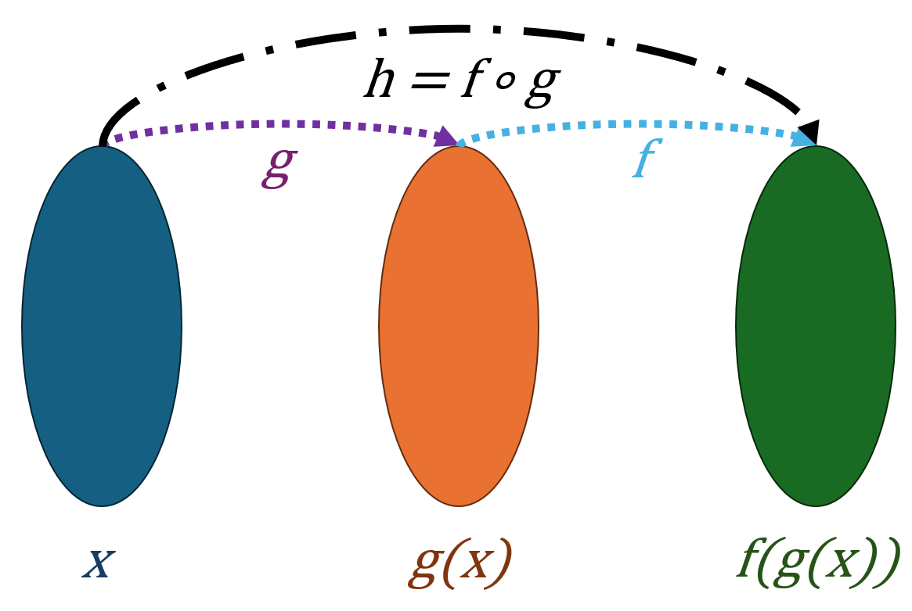

Кірістірілген функциялар Excel бағдарламасында есептеулерді жеңілдетеді. Мысалы, =SUM() — қосу, =AVERAGE() — орташа мән табу, =IF() — шартты логикаға негізделген нәтиже береді.
=SUM(A1:A10) — A1 ден A10 дейінгі ұяшықтардағы сандардың қосындысын есептейді.
